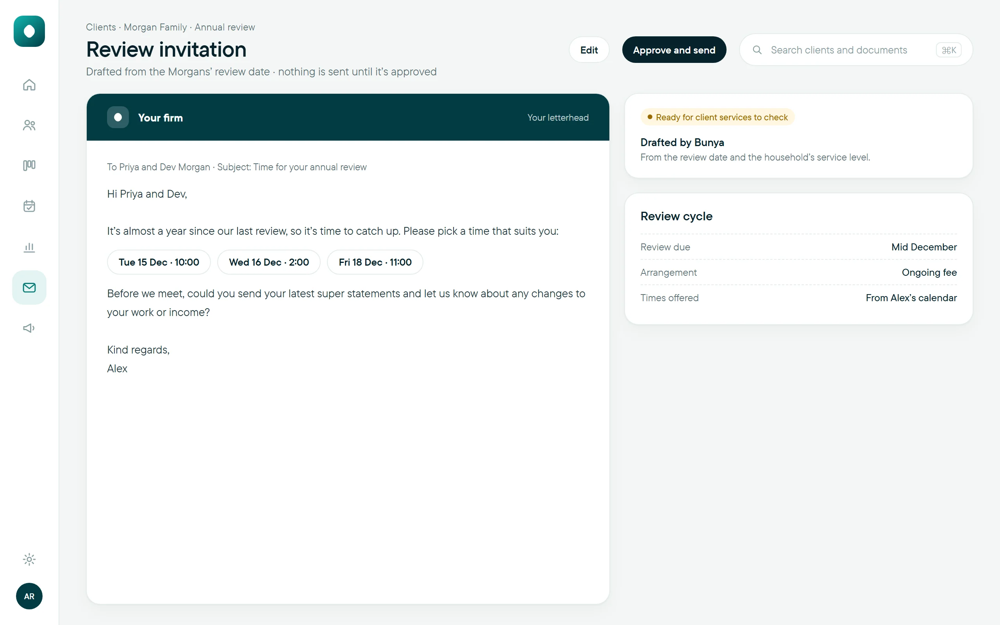
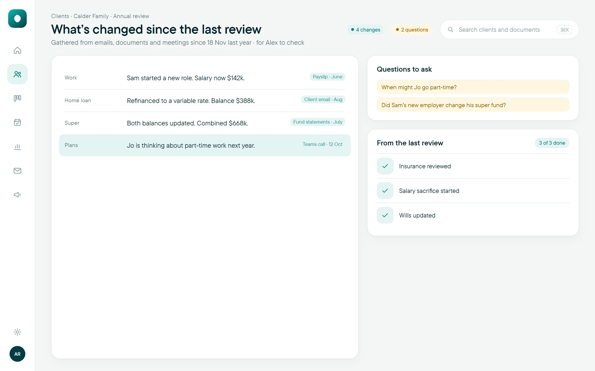
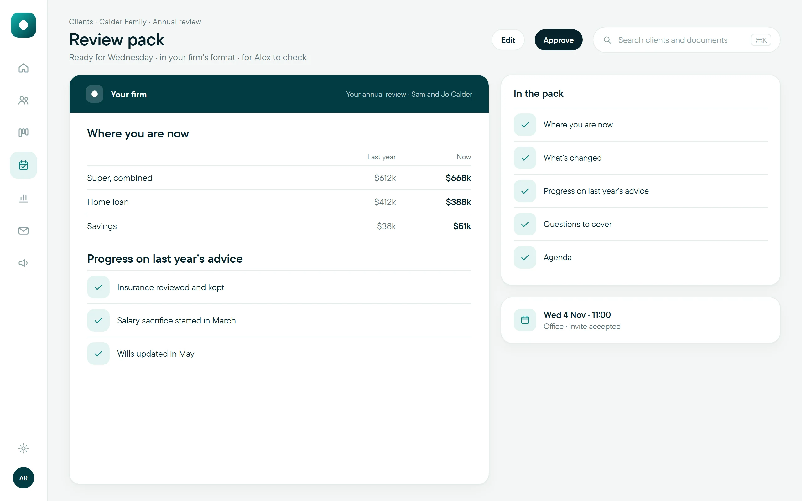

Review PacksEvery review, ready.
What’s changed since last time, gathered before the client walks in, and every fee consent renewed on time.
Part of Command Centre. 97c a client review, or included with the Advice EngineWorks inside your Microsoft 365TeamsOutlookSharePoint
Reviews start from real dates, not from someone noticing.
What’s changed and the review pack, ready before the meeting.
Fee consents renewed with the review they belong to.
How it works
- 1Due
Each review starts from the client’s real dates, not from someone noticing.
- 2Invite
The invitation is drafted. Your team approves it before it goes.
- 3Prepare
What’s changed, the review pack and any fee consent renewal, ready before the meeting.
- 4Review
Meeting Notes writes up the meeting and drafts the follow-up.
Works with Outlook, Teams, SharePoint, Meeting Notes and the client record.
In your format
The review pack, in your brand.
Here’s Aynub Financial’s annual review deck, a made-up practice we branded to show what your firm’s pack can look like.
See the whole Aynub example · Aynub Financial is a fictional practice. It holds no ABN or AFSL, and nothing here is financial advice.
Fee consent, with every review
Know when every consent is due, and act while the window is open.
- 1Due
Each consent’s due date is tracked from when it was signed.
- 2Ready
The renewal is prepared with the review it belongs to.
- 3Approved
Your team checks the request before it goes to the client.
- 4Recorded
The signed consent is kept on the client’s record.
Up close




Every review lined up from the client’s dates, so busy months show up before they arrive.
Today, and with Review Packs
What’s included
Questions
How far ahead does a review start?
As far ahead as your firm chooses. When each cycle starts, and every step after it, is set up for your firm before go-live.
Does anything go to the client without a person?
No. Invitations and review packs are drafted for your team. A person checks and approves each one before it goes.
What goes into the pack?
Where the client is now, what’s changed since the last review, progress on last year’s advice and the questions to cover. The format is set to match your firm.
Does Bunya make sure we meet our fee consent obligations?
No software can do that for you. Bunya keeps each consent with its review, reminds the right person and keeps the evidence. Your firm stays responsible for its obligations.
Goes well with
Review Packs, ready when you are.
Part of Command Centre. 97c a client review, or included with the Advice Engine.